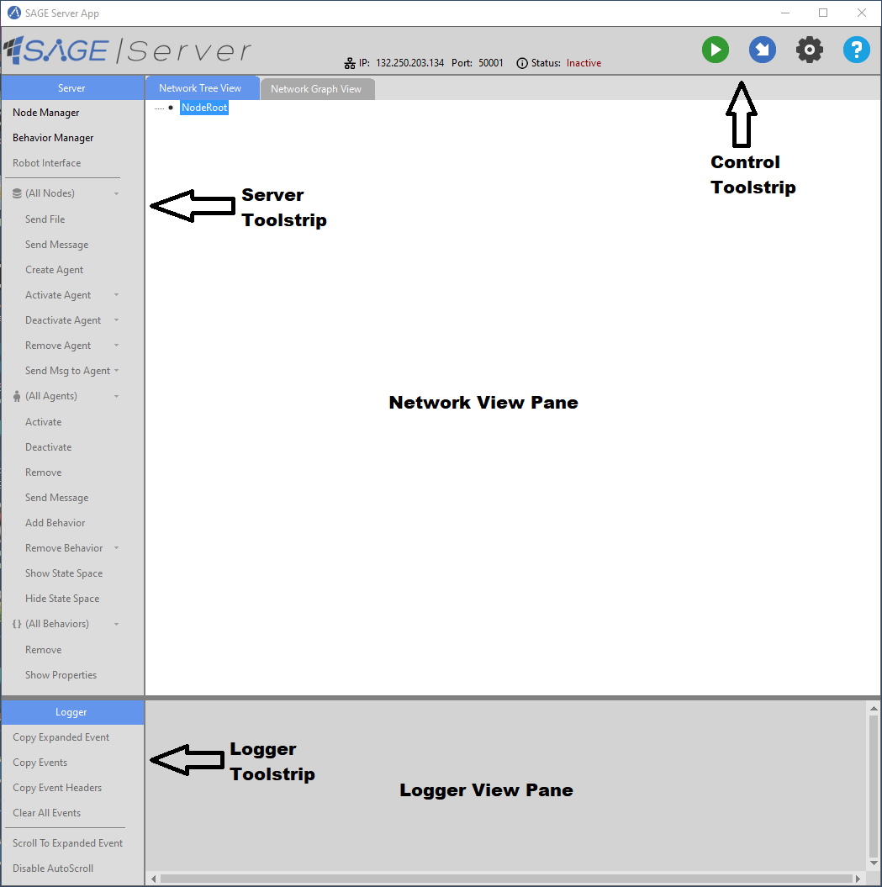
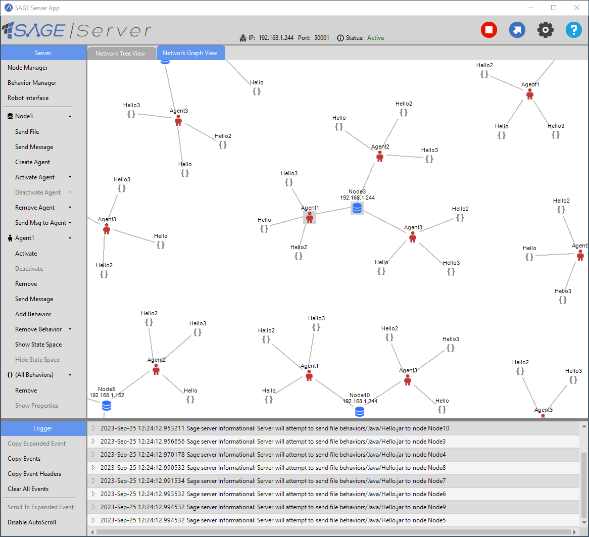
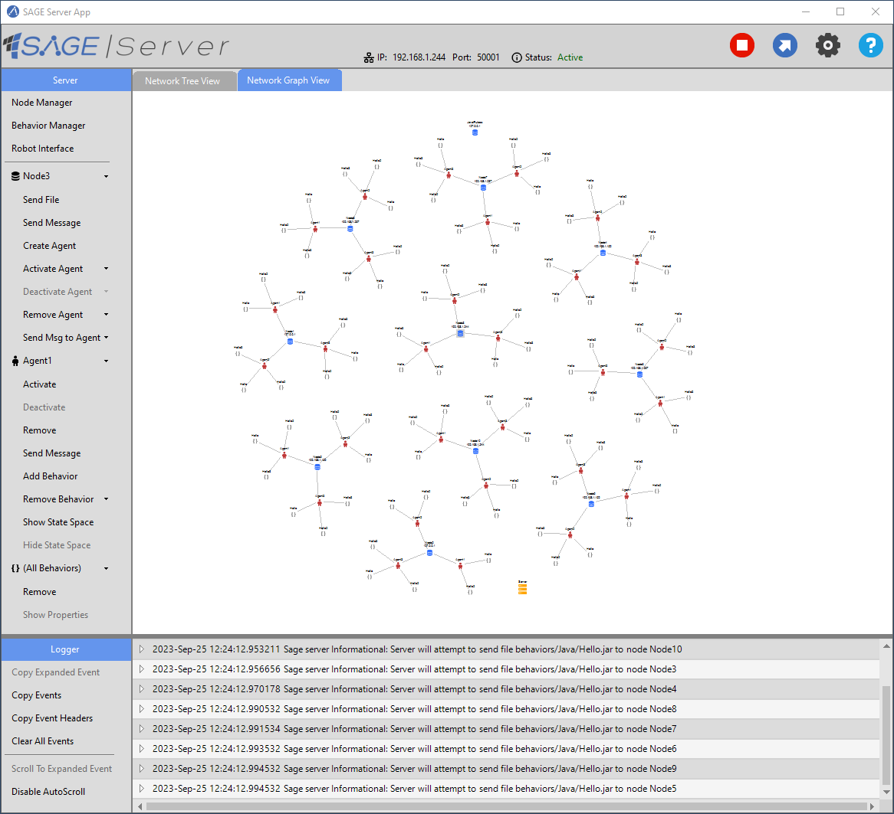
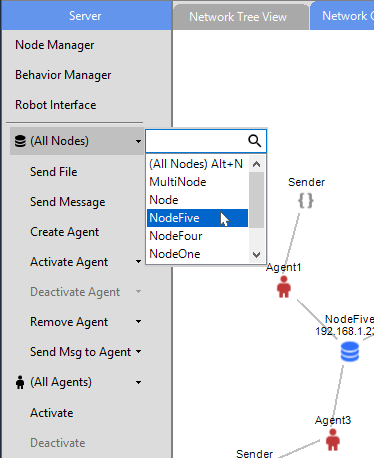
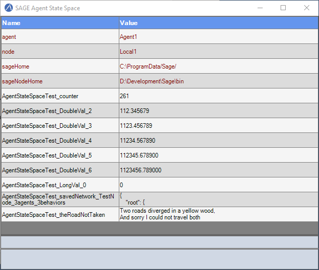
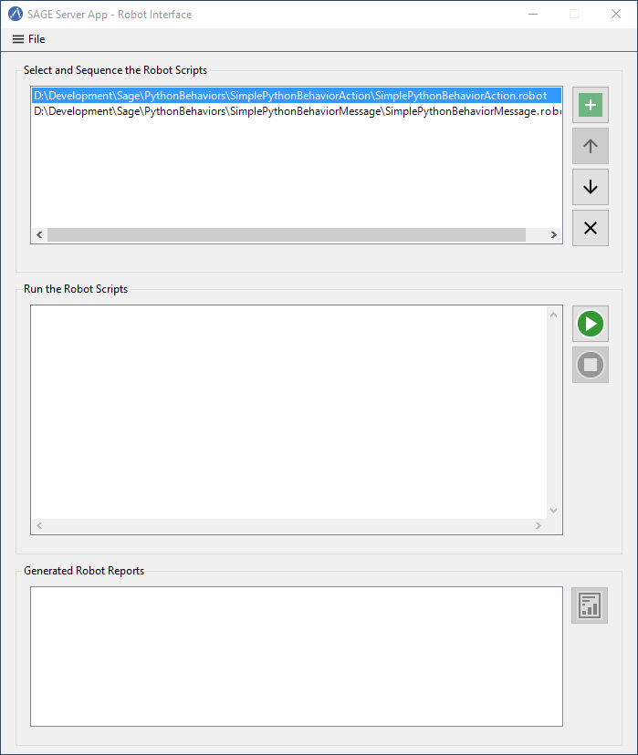

SAGE Server Application
The SAGE Server App provides a graphical user interface for viewing and controlling the SAGE runtime environment. SAGE Server App supports the following functions:
Manage behavior modules
Start and stop the SAGE server
View connected nodes
Manage nodes on the local server machine and networked remote machines
Control node access to the server machine
Send files and messages to nodes
Create, activate, deactivate and remove agents
Send messages to agents
Add and remove agent behaviors
Select, sequence and run SAGE Robot files
View generated Robot reports
View SAGE server log output, including behavior execution results
Load and Save SAGE networks
SAGE Server App is Windows compatible and distributed with the Windows x64 - Server installer.
To run SAGE Server App, double-click on the shortcut icon, or right-click on the icon and select “Open” from the context menu.
Main Window
Following is an annotated view of the SAGE Server App window when the application opens.
{kind=link}
Control Toolstrip
Provides buttons for:
Starting and stopping the SAGE Server.
Loading and Saving a SAGE network.
Configuring Server settings.
Displaying information about the SAGE Server and App.
Server Toolstrip
Provides buttons for viewing and controlling the SAGE network:
Manage SAGE Nodes on the local Server machine and networked remote machines.
Manage SAGE Behaviors
Launch the SAGE Robot Interface
Create and remove Agents
Activate and deactivate Agents.
Add and remove Behaviors
View Behavior properties.
Send files to Nodes.
Send messages to Nodes and Agents.
View Agent State Space
Network View Pane
Allows you to view and control the SAGE network using the following views:
Network Tree View
Network Graph View
Views can be toggled by clicking on the respective tab.
Logger Toolstrip
Allows you to interact with server-generated log events.
Provides buttons for:
Copying event logs to the Windows clipboard.
Clearing logs displayed in the Logger View Pane.
Controlling the scrolling of log events when the server is active.
Logger View Pane
Allows you to view server-generated log events, including behavior execution results as they occur in real-time.
Server Settings
Clicking on the Settings button in the Control Toolstrip brings up the Server Settings popup dialog.
{kind=link}
SAGE Server settings include the following:
Control Node access to the server machine.
Set Server IP port number
Set the maximum capacity of the SAGE event logger.
Adjusting window overlays.
Changing color theme of application.
Node access control is enforced when Enable Node Access Control is checked. This allows you to whitelist IP addresses in dot-decimal notation. An asterisk may be used as a wildcard character for any of the octet-grouped decimal numbers. Only IP addresses listed are allowed to connect to the server.
Setting the maximum capacity of the event logger prevents Server-generated log events from overrunning memory when the Server runs for very long periods of time (day or even weeks). When the maximum capacity is reached, older events are removed to make room for new events.
Settings are automatically saved when the application terminates.
Network Tree View
The Network Tree View provides a tree view of the SAGE network when the Server is active.
The root of the network tree is the NodeRoot tree-node representing the set of all connected SAGE Nodes.
SAGE Nodes are shown as branches under the NodeRoot tree-node. Each Node has an Agents tree-node representing the set of all Agents belonging to the Node.
A Node’s Agents are shown as branches under the Agents tree-node. Each Agent has a Behaviors tree-node representing the set of all Behaviors belonging to the Agent.
An Agent’s Behaviors are shown as leaf tree-nodes under the Behaviors tree-node.
Clicking on any tree-node selects and highlights it. Tree-nodes representing ancestor network entities are also selected.
Right-clicking on a tree-node displays a set of cascading context menus with a set of commands relevant to the current selection.
You can expand and collapse tree-nodes by clicking on the plus or minus sign next to a tree-node branch.
Double-clicking on a tree-node fully expands a branch if it is collapsed, and fully collapses a branch if it is expanded.
{kind=link}
Network Graph View
The Network Graph View provides a dynamic graph display of the SAGE network when the Server is active.
The Server graph-node represents the SAGE Server and is always visible when the Server is active.
SAGE Nodes are shown as root graph-nodes of their own sub-graphs.
Graph-nodes representing Agents are connected to their Node graph-node, and graph-nodes representing Behaviors are connected to their Agent graph-node.
Clicking on any graph-node selects and highlights it. Graph-nodes representing ancestor network entities are also selected.
Right-clicking on a graph-node displays a set of cascading context menus with a set of commands relevant to the selected object.
Clicking on the Server graph-node or on the view background displays a context menu relevant to the entire network.
You can reposition entities within the graph region by dragging with the left mouse button.
Double-clicking on a graph-node centers the entity within the view pane.
Double-clicking on the view background centers the graph region about that position in the view pane.
The graph view can be panned by clicking down anywhere in the view pane that is not on a graph-node and dragging.
{kind=link}
The graph view can be zoomed out and back in using the mouse wheel. When zooming, the scaling is applied about the mouse cursor position.
{kind=link}
Starting the Server
Click the Start button or the Load Network button in the Control Toolstrip to start the Server instance. After the Server has started, any previously created Nodes will be connected and displayed in the Network View Pane.
If the Server is started using the Load Network button, a previously saved Agent network is loaded. Nodes specified in the Agent network which are not already running will be started.
Once the Server becomes active, the Start button changes to a Stop button and the Load Network button changes to a Save Network button. The Server can be stopped at any time by clicking the Stop button.
Active Server
When the Server is active, the current state of the network is reflected in the Server Toolstrip and the Network View Pane.
The following screenshot shows an active Server network, with the Network Tree View displayed in the view pane.
{kind=link}
Clicking on the Network Graph View tab displays a graph-based view of the network.
{kind=link}
Nodes, their Agents and agent Behaviors are selected using either the ServerToolstrip or Network View Pane.
Commands operate on the current selection and are accessible from either the Server Toolstrip or Network View Pane context menus.
On the Server Toolstrip, node-related commands are under the Node dropdown button, agent-related commands are under the Agent dropdown button, and behavior-related commands are under the Behavior dropdown button.
{kind=link}
When an individual Node, Agent or Behavior is not selected, the corresponding dropdown button will display “(All Nodes)”, “(All Agents)”, or “(All Behaviors)”, and the commands will apply to all objects of that type.
In the image above, clicking the agent Activate button on the Server Toolstrip activates all inactive agents on all nodes in the network.
The image below shows how to perform the same operation using the Network View Pane:
Right-click on one of the following to display the Network View Pane context menu:
NodeRoot in the Network Tree View.
The Server graph-node in the Network Graph View.
The panel background in the Network Graph View.
Move the mouse over (All Nodes) to display the cascading node context menu.
Move the mouse over (All Agents) to display the cascading agent context menu.
Click the Activate button on the agent context menu.
{kind=link}
{kind=link}
Notice that commands in the cascading context menus match the commands in the Server Toolstrip.
In the Network Graph View, icons representing the newly activated Agents change color from red (inactive) to green (active), and dynamic messaging lines show the flow of messages sent between Agents.
{kind=link}
Click on the agent Deactivate button to deactivate all the Agents.
Selecting a SAGE Node, Agent or Behavior
A SAGE object (Node, Agent or Behavior) can be selected from the Server Toolstrip or the Network View Pane.
To select a Node, Agent or Behavior from the Network View Pane, click on the corresponding tree-node or graph-node.
To select a Node, Agent or Behavior from the Server Toolstrip, click on the corresponding dropdown button and select the object’s name from the popup combo box, as shown below.
{kind=link}
The current selection is reflected in both the Server Toolstrip and Network View Pane (Tree View or Graph View).
The mechanism for selecting SAGE objects and applying commands is enforced by the topology of the Network Tree View and Graph View and by the Server Toolstrip menu items.
In the screen shot below, NodeFive is selected, but no Agent or Behavior has been selected.
The node-related commands apply to NodeFive.
The agent-related commands apply to all the NodeFive Agents.
The behavior-related commands apply to all the Behaviors on all the NodeFive Agents.
{kind=link}
{kind=link}
The Server Toolstrip can be very useful when managing networks with a large number of Nodes or Agents.
In the following screenshot, the network has a single Node with 50 Agents. Selecting an Agent using the Server Toolstrip is much easier than trying to locate and select the Agent using either of the Network Views.
{kind=link}
The number of Agent names to scroll through in the toolstrip combo box can be reduced by entering the first few letters of the name (e.g. “A2”) in the combo box edit control.
The Node Manager
Use the SAGE Node Manager to start and stop Containerized and NonContainerized Nodes on the Local Host computer, and containerized nodes on networked Remote Host computers. SAGE Nodes can be started and stopped at any time, even when the Server is inactive.
The Node Manager is opened by clicking on the Node Manager button on the Server Toolstrip or the Network View Pane context menu (when selecting the NodeRoot in the Tree View or the Server graph-node or panel background in the Graph View) .
{kind=link}
The Network Tree at the left displays the current host network (the Local Host and any managed Remote Hosts) and the SAGE nodes running on each Host. The Information Pane at the right displays information about the selected Node or Host tree-node.
A Host is in the connected state if its icon is blue; a gray icon indicates the Host is currently not connected. A Remote Host is identified by its name if the name was supplied when the Remote Host was added, otherwise the Remote Host is identified using its IPv4 address.
Nodes may be Containerized (running in a Docker container) or NonContainerized (running as a process on the host computer). The icon for Containerized Nodes is a “bulls-eye”, whereas the icon for NonContainerized Nodes is a singe solid circle. Both Containerized and NonContainerized Nodes may be started on the Local Host, however, only Containerized Nodes may be started on a Remote Host.
The Node Manager displays only “Managed” Hosts and their Nodes. Managed Hosts include the Local Host and any Remote Hosts which were added to the Node Network by resolving their connectivity using SSH key-based authentication. Managed Nodes include Containerized and NonContainerized Nodes that were started by the Node Manager, as well as any Containerized Nodes that were independently started (outside of the App) on the Local Host or any of the currently connected Managed Remote Hosts.
Note that a Managed Remote Host may not be in a connected state at a given point in time, and that no Nodes will be displayed for a disconnected Remote Host.
“Unmanaged” Nodes are Nodes which do not appear in the Node Manager Network, but which may be connected to the active Server and displayed in the SAGE Server App Network View Pane. These include NonContainerized Nodes started outside of the App on the Local Host or a Remote Host, as well as any Containerized Nodes running on an Unmanaged Remote Host.
Node Manger Settings
Clicking on the Settings button in the Node Manager menu brings up the Node Manager Settings popup dialog.
{kind=link}
Node Manager settings include the following:
Default Node Scheduler Timer Precision.
Option to start a Local NonContainerized Node in a console window.
Node View Refresh Period to set the frequency for refreshing the Node Network.
The Node Network can be refreshed manually at any time by clicking on the Refresh button (curved arrow icon) on the Node Manager menu strip.
Node Image Registry for pulling SAGE Docker images.
Node Manager: Adding a Remote Host
To add a Remote Host to the Node Network:
Select the “SAGE Nodes” tree-node.
Bring up the “SAGE Nodes” context menu by right-clicking on the SAGE Nodes tree-node or left-clicking on the Manage menu button (icon with three horizontal bars).
Click the Add Managed Remote Host command.
In the popup dialog, enter the Username and Host ID for logging onto the remote host (using previously configured SSH key-based authentication).
The Host ID can be either the name of the remote host or its IPv4 address.
Click the Test Connection button to resolve the Host ID.
If the connection was successful, click Ok to confirm the command, or Cancel to cancel the operation.
{kind=link}
{kind=link}
In additon to the Add Managed Remote Host command, the “SAGE Nodes” context menu also includes commands to Remove All Managed Remote Hosts and Stop All Managed Nodes. The Node Manager always requests confirmation before removing a Remote Host.
**
Node Manager: Removing a Remote Host
To remove a Remote Host from the Node Network:
Select the Remote Host tree-node.
Bring up the Remote Host context menu by right-clicking on the Remote Host tree-node or left-clicking on the Manage menu button.
Click Remove Managed Host to remove the Remote Host.
To remove all Managed Remote Hosts from the Node Network:
Select Remove All Managed Remote Hosts from the “SAGE Nodes” context menu.
The Node Manager will always request confirmation before removing a Remote Host.
Node Manager: Pulling a Docker Image to a Host
Two conditions are required to start a Containerized Node on a Managed Host: Docker must be installed and running, and the Docker sagenode image for the current SAGE version (e.g., sagenode:3.0.3) must be present on the Host. When a Host is selected in the Network Tree, the Docker Running and Docker Image check boxes in the Information Pane indicate if these conditions have been met. If Docker is running but the sagenode image is missing, the Host context menu provides a command for pulling the image from the Sage Node Image Repository specified in the Settings dialog.
To pull a Docker sagenode image:
Select the Host tree-node.
Bring up the Host context menu by right-clicking on the Host tree-node or left-clicking on the Manage menu button.
Click Pull Image to initiate the pull operation.
{kind=link}
The pull operation can be lengthy, especially if this is the first time a sagenode image has been pulled to this Host. While the pull is in progress the Host context menu provides a means of cancelling the operation. When the pull is complete, the pull items are removed from the context menu and the Docker Image checkbox will be checked.
{kind=link}
Node Manager: Starting a Node
To start a Node on the Local Host or a Remote Host:
Select the Host tree-node (Local Host or a Remote Host).
Bring up the Host context menu by right-clicking on the Host tree-node or left-clicking on the Manage menu button.
Click Start Containerized Node to start a containerized Node, or Start NonContainerized Node (Local Host only) to start a nonContainerized Node.
Start Containerized Node is enabled if Docker is running and the required Docker sagenode image is available on the Host system.
Start NonContainerized Node is available only on the Local Host context menu and is enabled if SAGE Node is installed on the local system.
In the popup dialog, enter the Node name and select the desired Scheduler Timer Precision (High, Medium or Low).
Click Ok to confirm the command, or Cancel to cancel the operation.
{kind=link}
The newly created Node will appear beneath the Host tree-node in the Network Tree. For a local nonContainerized Node, a SageNodeConsole console window will be displayed on the desktop if that option was enabled in the Node Manager settings.
If the Server is active, the Node will connect to the Server and be displayed in the SAGE Server App Network View Pane. If the Server is inactive, the Node instance will connect after the Server is started.
Node Manager: Stopping a Node
To stop a Node on the Local Host or a Remote Host:
Select the Node tree-node.
Bring up the Node context menu by right-clicking on the Node tree-node or left-clicking on the Manage menu button.
Click Stop Node to initiate Node termination.
A NonContainerized Node will normally stop immediately, however, a Containerized Node can take a number of seconds to stop. The icon color changes to red to indicate that the Node is in the process of terminating. Upon termination, the Node is removed from the Node Network.
To stop all Nodes on a single Host or the entire Network:
Select Stop All Managed Nodes on a Host context menu to stop all Managed Nodes on that Host.
Select Stop All Managed Nodes on the “SAGE Nodes” context menu to stop all Managed Nodes on the Network.
**
The Behavior Manager
Use the Behavior Manager to view and update installed Behaviors.
The Behavior Manager is opened by clicking on the Behavior Manager button on the Server Toolstrip.
{kind=link}
The Behavior Tree on the left shows the currently installed behavior modules and their Behaviors.
The Behavior Information Pane on the right contains information about a Behavior when its corresponding tree-node is selected.
Tree-nodes at the first three levels represent hierarchical colletions of behavior module types, classified by language and target environment.
Under Managed are the currently supported Managed Behavior Types: “Java”, “JavaScript” and “Python”.
Under Native are the currently supported Native Behavior Types: “Linux32”, “Linux64”, “Windows32” and “Windows64” (32-bit and 64-bit Windows and Linux modules).
Under each Behavior Type tree-node are tree-nodes representing the installed Behavior Modules for that type.
The file extensions correspond to the Behavior Type, e.g., “.jar” for Java, “.py” or “.egg” for Python, “.so” for Linux32 and Linux64, and “.dll” for Windows32 and Windows64.
Under each Behavior Module tree-node is the leaf tree-node representing that module’s Behavior. When a Behavior tree-node is selected, information about that Behavior is displayed in the Behavior Information Pane.
Management capabilities include adding and deleting Behavior Modules, and refreshing the Behavior Tree to synchronize the Behavior Tree with the SAGE Behavior repository.
Behavior Manager: Adding a Behavior module
To add a Behavior Module from the respoitory:
Select an appropriate tree-node from one of the first three levels (Behaviors, Managed, Native, or one of the Behavior Types).
Selecting a lower-level tree node restricts the types of modules to add, e.g., selecting the Java Behavior Type will only allow adding Java Behavior Modules.
Bring up the associated context menu by right-clicking on the selected tree-node or left-clicking on the Manage menu button (icon with three horizontal lines).
Click Add Module to display a File Open dialog. Navigate to the desired folder and select one or more Behavior Module files to open.
When a Behavior Module is added, the file is automatically added to the proper SAGE Behavior repository sub-directory.
Behavior Type |
Behavior Path |
|---|---|
Java |
C:\ProgramData\Sage\behaviors\Java |
JavaScript |
C:\ProgramData\Sage\behaviors\JavaScript |
Python |
C:\ProgramData\Sage\behaviors\Python |
Windows32 |
C:\ProgramData\Sage\behaviors\Windows32 |
Windows64 |
C:\ProgramData\Sage\behaviors\Windows64 |
Linux32 |
C:\ProgramData\Sage\behaviors\Linux32 |
Linux64 |
C:\ProgramData\Sage\behaviors\Linux64 |
Behavior Manager: Removing a Behavior module
To remove a Behavior Module from the respoitory:
Select the Behavior Module tree-node.
Bring up the Behavior Module context menu by right-clicking on the selected tree-node or left-clicking on the Manage menu button.
Click Delete Module to remove the Behavior Module file from the SAGE Behavior repository.
The Node Manager will request confirmation before completing the action.
Behavior Manager: Refreshing the Behavior Tree
Click the Refresh Behavior Tree menu button (circular arrow icon) to synchronize the behavior tree with the SAGE Behavior repository. This is only required when behaviors are installed or uninstalled from the repository outside of the App while the Behavior Manager window is open.
The Behavior Tree is automatically refreshed whenever the Behavior Manager is opened.
The Behavior Manager is available when the Server is both active and inactive and can remain open while the user interacts with the App’s main form window.
Creating an Agent
Agents can be created on Nodes when the Server is active.
To create an Agent on one or more Nodes:
Select the Node(s) from the Server Toolstrip or Network View Pane.
Select a Node to create the Agent on just that Node.
Select (All Nodes) to create the Agent on all SAGE nodes.
Click Create Agent from the Server Toolstrip or the Network View Pane context menu.
Enter the Agent’s name in the popup dialog.
Click Ok to confirm the command, or Cancel to cancel the operation.
{kind=link}
If the agent already exists on a Node, the agent will not be created on that Node.
Adding a Behavior to an Agent
Behaviors can be added to Agents when the Server is active.
To add a Behavior to one or more Agents:
Select the Agent(s) from the Server Toolstrip or Network View Pane.
Select an Agent to add the Behavior to just that Agent.
Select a Node to add the Behavior to all Agents of that Node.
Select (All Nodes) to add the Behavior to all Agents of all the Nodes.
Click Add Behavior from the Server Toolstrip or the Network View Pane context menu.
Select the Behavior from the Behavior Tree.
Click Ok to confirm or Cancel to cancel the operation.
You can also confirm by right-clicking the Behavior and selecting Select Behavior.
{kind=link}
If confirmed, the following popup dialog will appear:
{kind=link}
To specify topics for the Behavior:
Enter the desired behavior topic strings. If topics have been added to a previous Behavior, button Paste Previous Topics will be enabled. Clicking this button will automatically add the previous topics to this behavior.
Click Ok to continue or Cancel to continue without adding a topic.
If the behavior already belongs to an Agent, the behavior will not be added to that Agent.
Viewing Behavior Properties
To view the properties of a Behavior:
Select the Behavior from the Server Toolstrip or the Network View Pane.
Click Show Properties from the Server Toolstrip or the Network View Pane context menu.
The Behavior Properties include the information provided by the Behavior Manager as well as any Behavior Topics assigned when the Behavior was added to the Agent.
The Behavior Properties windows remains visible until the user closes it or the Behavior becomes unselected in the Server Toolstrip or Network View Pane.
**
Removing a Behavior from an Agent
Behaviors can be removed from Agents when the Server is active.
To remove one or more Behaviors using the Remove command:
Select the Behavior(s) from the Server Toolstrip or the Network View Pane.
Select the Behavior to remove just that Behavior.
Select an Agent to remove all Behaviors from the Agent.
Select a Node to remove all Behaviors from all Agents of the Node.
Select (All Nodes) to remove all Behavior from all Agents of all the Nodes.
Click Remove from the Server Toolstrip or the Network View Pane context menu.
To remove one or more instances of a named Behavior using the Remove Behavior command:
Select the Agent(s) having the named Behavior from the Server Toolstrip or the Network View Pane.
Select an Agent which has the named Behavior.
Select a Node having at least one Agent which has the named Behavior.
Select (All Nodes) – assumes a Network having at least one Agent which has the named Behavior.
Click Remove Behavior from the Server Toolstrip or the Network View Pane context menu, then select the Behavior name from the popup combo box.
Activating an Agent
Inactive agents can be activated when the Server is active.
To activate one or more Agents using the Activate command:
Select the Agent(s) from the Server Toolstrip or the Network View Pane.
Select the Agent to activate just that Agent.
Select a Node to activate all Agents of that Node.
Select (All Nodes) to activate all Agents of all the Nodes.
Click Activate from the Server Toolstrip or the Network View Pane context menu.
To activate one or more instances of a named Agent using the Activate Agent command:
Select the Node(s) having the named Agent from the Server Toolstrip or the Network View Pane.
Select a Node which has the named Agent.
Select (All Nodes) – assumes a Network having at least one Node which has the named Agent.
Click Activate Agent from the Server Toolstrip or the Network View Pane context menu, then select the Agent name from the popup combo box.
Deactivating an Agent
Active agents can be deactivated when the Server is active.
To deactivate one or more Agents using the Deactivate command:
Select the Agent(s) from the Server Toolstrip or the Network View Pane.
Select the Agent to deactivate just that Agent.
Select a Node to deactivate all Agents of that Node.
Select (All Nodes) to deactivate all Agents of all the Nodes.
Click Deactivate from the Server Toolstrip or the Network View Pane context menu.
To deactivate one or more instances of a named Agent using the Deactivate Agent command:
Select the Node(s) having the named Agent from the Server Toolstrip or the Network View Pane.
Select a Node which has the named Agent.
Select (All Nodes) – assumes a Network havnig at least one Node which has the named Agent.
Click Deactivate Agent from the Server Toolstrip or the Network View Pane context menu, then select the Agent name from the popup combo box.
Sending a Message
The Send Message command allows the user to send a message from the SAGE server to one or more Nodes and their Agents when the Server is active.
To send a message:
Select the target Node(s) and Agents(s) from the Server Toolstrip or the Network View Pane.
Select an Agent to send a message to just the Agent and its Node.
Select a Node to send a message to the Node and all its Agents.
Select (All Nodes) to send a message to all the Nodes and all their Agents.
Click Send Message from the Server Toolstrip or the Network View Pane context menu.
In the Send Message dialog, enter the message text, topic and any data items.
Click Ok to confirm, or Cancel to cancel the operation.
{kind=link}
Message sending is graphically depicted in the Network Graph View. Messages are shown traveling from the source (in this case the Server) to one or more destinations (in this case Node1 and all its Agents).
{kind=link}
The source entity is highlighted with a large rectangle and the destination entity are highlighted with small rectangles.
Server messages (generated using the Send Message command) are shown in orange.
Agent messages (generated by agent Behaviors) are shown in light blue.
**
Sending Files to a Node
The Send File command allows the user to send a file from the SAGE server to one or more Nodes when the Server is active.
To send a file:
Select the Node(s) from the Server Toolstrip or the Network View Pane.
Select a Node to send the file to just that Node.
Select (All Nodes) to send a file to all the Nodes.
Click Send File from the Server Toolstrip or the Network View Pane context menu.
Navigate to the desired folder and select the file to send.
Click Open to confirm, or Cancel to cancel the operation.
A sub-folder with the same name as the Node will be created (if it does not already exist) in the SAGE data directory on the targeted Node machine where the sent files will be copied to.
“C:\ProgramData\Sage\data\NodeName”
Viewing Agent State Spaces
Every SAGE agent has a State Space which includes the following information:
Agent name
Node name
The “sageHome” directory
The “sageNodeHome” directory
An active Agent can have additional named States which are created and managed by one or more of its Behaviors.
To view the State Space for one or more Agents:
Select the Agent(s) from the Server Toolstrip or Network View Pane.
Select an Agent to view its State Space.
Select a Node to display the State Spaces of all Agents on the Node.
Select (All Nodes) to display the State Spaces of all Agents on all SAGE nodes.
Click Show State Space from the Server Toolstrip or the Network View Pane context menu.
If the State Space is already open, this will bring it to the foreground.
The Agent State Space below shows a number of additional states which were created and are dynamically managed by the Agent’s Behavior.
{kind=link}
To hide open Agent State Space(s), either click the State Space window’s Close button or do the following:
Select the Agent(s) from the Server Toolstrip or Network View Pane.
Select an Agent to hide its State Space.
Select a Node to hide the State Spaces of all Agents on the Node.
Select (All Nodes) to hide the State Spaces of all Agents on all SAGE nodes in the foreground.
Click Hide State Space from the Server Toolstrip or the Network View Pane context menu.
The SAGE Robot Interface
The SAGE Robot Interface allows you to run Robot scripts and view the results from within the SAGE Server App.
Click the Robot Interface button on the Server Toolstrip to start a new instance of the SAGE Robot Interface, as shown below.
{kind=link}
At the top of the window are controls to select and sequence the Robot script files.
Robot scripts are added, removed and sequenced using the buttons to the right of the Robot scripts list.
The Add and Remove operations are also available from the File menu.
To run a Robot script:
Open Robot Interface
Click the Add button .
Select the Robot file and click Open.
Repeat steps 1 and 2 to add additional Robot scripts.
Click the Start button to start the run.
The Robot scripts will be run one at a time in the sequence specified.
Clicking the Stop button will abort the run.
When a Robot script successfully completes, the pathname of the generated report file appears in the report list at the bottom of the window.
{kind=link}
To view a report, select it from the report list and click the Report button located in the bottom-right corner. You may also right-click the report pathname and select View Report from the context menu.
The Log Viewer
The display of Server-generated log events are handled by the Log Viewer.
The types of log events include exceptions, errors, warning, informational messages, and behavior execution results.
By default a single-line header is displayed showing the timestamp, event type, and a brief description.
{kind=link}
Message and result events can be expanded to show additional information.
Only one log event can be expanded at a time.
The Logger Toolstrip provides buttons for copying log events to the Windows clipboard and for clearing the Log Viewer. These commands are also available on the context menu displayed when right-clicking on a log event.
When the Server is stopped, currently displayed event logs remain.
All events, including removed events, are saved to a log data file located in C:\ProgramData\SAGE\logs.
Loading and Saving an Agent Network
Agent network configurations can be saved and loaded. The files are saved as two JSON files with a common base filename and the extensions “.sage” and “.sagenode”.
The Node Network JSON file has extension “.sagenode” and is used by the SAGE Node Manager to start the Managed Nodes.
Node networks can be independently loaded and saved from the Node Manager using the Load Managed Nodes and Save Managed Nodes menu buttons, even when the Server is inactive.
The Agent Network JSON file has extension “.sage” is used by the SAGE Server to load the Agents and their Behaviors on the connected Nodes.
This is the file that the user sees when loading or saving an Agent Network from the App. It will always be accompanied by the companion “.sagenode” file used by the Node Manager to start the Nodes.
Saving an Agent Network
The current Agent network configuration can be saved (exported) when the Server is active.
To save an Agent network:
Click the Save Network button on the Control Toolstrip.
Navigate to the desired folder for saving the network configuration files.
Enter a filename for your Agent Network configuration (must have extension “.sage”).
Click the Save button.
Loading an Agent Network
A previously saved network configuration can be loaded (imported) when the Server is inactive.
To load an Agent network:
Click the Load Network button on the Control Toolstrip.
Navigate to the folder containing the previously saved network configuration files and select the Agent Network file (with extension “.sage”).
Click the Open button.
The SAGE Server will start and the Node Manager will attempt to start any missing Nodes. The Server will then perform a validation check on the JSON tree by ensuring that all Nodes referenced in the network exist and that all Behaviors to be added to the Agents exists in the Behavior repository.
If there are any errors (e.g., missing Nodes or Behaviors), an “Agent Network Load Errors” dialog window will appear listing the errors.
The dialog window remains open while the user attempts to resolve the issues.
{kind=link}
In the above example, two Nodes residing on the remote Host named “surface-laptop” could not be started because the remote Host was offline. The issue is resolved by bringing “surface-laptop” back online.
Click the Retry button to retry loading the network configuration, or click Cancel to abort the operation.
If there are no more errors, the Server is able to create the Agents and load their Behaviors so that the saved network is fully configured.
{kind=link}